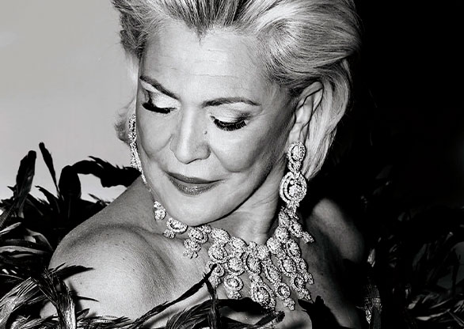

Determinada,corajosa e guerreira

Mulher a frente de seu tempo que ultrapassou barreiras para conseguir com muita determinação, realizar todos os seus sonhos e ficou marcada como ícone da TV Brasileira. Sendo considerada por todos a Rainha da TV Brasileira.
“Eu só penso e atraio coisas boas”
Sua História
Hebe Maria Monteiro de Camargo Ravagnari, nascida em Taubaté/SP, no dia 08 de março de 1929, foi uma apresentadora, cantora, radialista, humorista e atriz brasileira. Considerada a Rainha da TV brasileira, iniciou sua carreira como cantora na Rádio Tupi na década de 1940. Na década de 1950, ela já era conhecida como A Estrela de São Paulo e foi convidada por Assis Chateaubriand para recepcionar a chegada ds equipamentos para dar início a primeira rede de TV brasileira. Em 1955, ela iniciou o primeiro programa feminino da TV brasileira, O Mundo é das Mulheres. Ainda nas décadas de 1960 e 1970 ela era considerada a maior entrevistadora do Brasil.
No ano de 1964, ela se afastou da TV para dar a luz a seu primeiro e único filho, retornando a TV apenas dois anos depois, em 1966 com o Programa Hebe, que permaneceu mais de quarenta anos no ar e passou por diversas emissoras. Ele acabou a consagrando como a "Rainha da TV brasileira". Em 29 de setembro de 2012, a cidade de São Paulo, aos 83 anos, Hebe Camargo, morreu após sofrer uma parada cardiorespiratória de madrugada enquanto dormia, deixando milhares de brasileiros sentindo a sua ausência na TV brasileira.